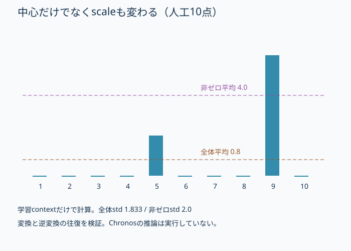
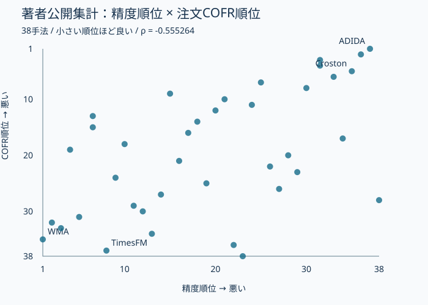

概要
少しずつ外す予測より、余分に見積もる予測の方が注文を完納できる場合がある。本論文の対象は月次の間欠・塊状需要を持つ物流部品。38手法を同じ補充規則へ入れると、20,330件の実注文で精度と完納の順位が逆向きになった。これは「精度を捨てればよい」という結論ではない。追加在庫を含む意思決定の評価が必要になる。
問題設定
精度benchmarkは4,021品目、注文評価はそのうち3,828品目・41 platform。Chronos補正の集計は4,558品目で、同じ分母ではない。1注文の全明細が揃った場合だけ成功と数えるCOFRでは、一品の不足が注文全体の失敗になる。RAFとM5には実multi-item order logがないため、3領域の比較には品目単位のfill proxyを使う。
核心
著者の主張 · 論文に書かれていること
同一在庫方策で手法を比較すると、間欠需要の強い部品契約で精度順位とservice順位が逆転する。偏りの方向を診断し、Chronos-2の非ゼロ条件付き正規化でserviceを改善する。
解釈・批評 · 読書メモ
Contextual Deconvolutionは在庫費用との整合、VN2は予測と発注policyの組を問う。本論文は固定policyで予測の偏りを切り分ける。ChronosFlow-ICGPSは発注量に依存して打ち切られた需要を生成補完する研究で、観測需要に対する正規化補正とは問題が異なる。これらを接続するなら、潜在需要の回復、COFR、在庫費用を別々に評価したい。
モデル / 手法
38手法の比較とChronos-2補正は別の実験
横断benchmarkにはWMA、Croston/SBA/TSB、LightGBM/XGBoost、DeepAR、TimesFM、Moirai、Chronos-Bolt tiny/smallなどを含む。正規化を修正したChronos-2は適応実験で扱うモデルであり、Boltと同一のcheckpointではない。
誤差の定義を先に揃える
Eq. 1はlead time Hの需要合計Yと予測H r̂を比較する。Eq. 2のMASEは、各品目の絶対誤差eを直近3観測平均によるlead-time誤差dで割り、d=0なら未scaleのeを使う独自定義。一般的なin-sample差分scaleとは異なり、1未満なら必ずbaselineよりよいとは言えない。Table Vの適応比較はΣe/Σdのpooled ratioである。
補充はS=max(0, μ̂(L+R)+z σ̂√(L+R))。z=Φ⁻¹(τ)、L=6月、R=1月を基本とし、初期在庫S・空の補充pipelineで開始する。受入を需要より先に処理し、注文を固定順序で評価。全明細を満たせない注文は在庫を消費せず、backorderにもせず棄却する。品目proxyは部分消費を許す別のreplayなのでCOFRに読み替えない。
BDDは誤差を符号付きで読む手順
Bias-Direction Diagnosticは新しいforecasting modelではない。まず精度とservice順位の符号を確認し、signed lead-time bias、zero-periodの誤差寄与、在庫量を併記する。MAEのゼロ期間項はΣ[y=0]|ŷ|/N。Croston/SBAでは誤差の53〜54%がここにあり、正の余分な予測がspikeの不足を相殺しうる。過剰在庫を無料の改善として数えない。
非ゼロ平均へ移すと、入力と逆変換の両方が変わる
Chronos-2の(x−mean)/stdを、正需要だけのmean/stdへ置き換える。未来の正需要を使わず、各originの学習contextだけから統計を求める。全ゼロなら中心0、scaleが0ならmodelのε。arcsinhが有効なら逆arcsinhの後で保存した中心とscaleへ戻す。
下の例は8割ゼロ、正値2と6。平均0.8に対し正値平均4.0となる。正規化出力が0の定数代理を逆変換すれば0.8/4.0に分かれるが、これはChronosの予測値ではない。実モデルは変換後の全系列を処理するため、平均を置き換えただけで同じ改善が出る保証はない。
非ゼロ条件付き正規化を人工系列で追う
{kind=link}

予測から契約指標まで、3段階を区別する
- lead-time需要Yᵢ = Σₕ yᵢ,o+h ; Ŷᵢ = H r̂ᵢ
月ごとの誤差とlead-time全体の誤差は違う。
- 固定方策のstock targetSᵢ = max(0, μ̂ᵢ(L+R) + z σ̂ᵢ√(L+R))
同じσならΔS=(L+R)Δμ。保証は在庫目標まで。
- 全明細が揃って初めて成功COFR = |Q|⁻¹ Σq 1[minⱼ∈Iq Fqj = 1]
1明細でも不足すればその注文は失敗。
- 正規化の変更x̂nz = (x − E[x|x>0]) / std(x|x>0)
統計は学習contextだけ。逆変換も同じ統計を使う。
なぜ効きそうか
解釈・推論
解釈: ゼロが多い履歴では平均が小さくなり、絶対誤差を減らす予測は需要の山を低く見積もりやすい。平均予測を上げれば同じ分散・safety factorの在庫目標は上がる。ただし完納できない注文を棄却して在庫を保存する規則では、目標が大きいほど実現COFRが必ず上がるとは限らない。論文のProposition 1も保証するのはstock targetの順序だけである。
根拠
一次資料の著者報告。
PDF §III–IV、Tables III–VII。著者報告の注文順位相関はρ=−0.555、95% bootstrap CI [−0.78,−0.26]、n=38。8 model classへまとめた感度分析は−0.88だが、独立な追試ではない。
| 評価 | 工業部品 | RAF | 月次M5 |
|---|---|---|---|
| 品目fill proxyとの順位相関 | −0.582 | −0.173 | +0.359 |
符号は領域によって変わる。RAFの一部手法は有効品目数が異なるavailable-case比較で、Prophetに代わりiMAPAを含む。M5は疎な250品目を選んでも部品ほど間欠的ではない。
| Chronos-2 / Table V | 標準 | 非ゼロ条件付き |
|---|---|---|
| pooled MASE | 0.831 | 0.948 |
| fill proxy @90%目標 | 77.5% | 92.0% |
| signed bias | −2.52 | −0.10 |
| 注文COFR（§IV-D） | 54% | 63% |
90%はpolicyの目標で、実現充足率でも信頼水準でもない。Table VIの別origin集合では0.834→0.955、77.8→92.4%となる。提示数値と異なる再測定値を混ぜない。補正後も80-of-80契約基準は満たさない。
RUFは5,000品目の公開合成panel。実品目の集約templateから発生×量を生成し、class・zero率の一致を最大10回で検査する。非cold-startの84%がgateを通る。周辺分布と依存の整合は認証対象だが、機密の実注文そのものではない。38手法でρ=−0.47、補正MASE 0.765→0.807とproxy +17.6〜21.4 ppを報告する。LabではRUF全38手法を再実行していない。
精度順位と注文COFR順位の散布図
{kind=link}

順位相関の符号は需要regimeで変わる
| 条件 | 対象 | 指標 | ρ |
|---|---|---|---|
| 工業部品の注文 | 20,330実注文 | COFR | −0.555 |
| 工業部品の品目 | 38手法 | fill proxy | −0.582 |
| RAF | 38手法 / coverage差あり | fill proxy | −0.173 |
| M5 | 250品目の月次panel | fill proxy | +0.359 |
列が収まらない場合は、表を横にスクロールできます。
実行可能な理解
uv run papers/accuracy-not-service-intermittent-demand/run.py。固定seedの4品目・144人工注文を同一順序・同一補充規則でreplayし、予測倍率を変えてMAE・COFR・平均在庫を測る。別に正規化と逆変換、全ゼロ・単一正値の端点を確認する。公式公開CSVによる38手法の順位散布図は著者集計の再描画であり、この人工replayとは別。
実行コードと補助ファイル（plot.py、author-orderbook.csv）を同じフォルダーへ保存して実行してください。
結果
固定seedの人工注文。論文38手法・RUF・Chronos-2の再現ではない。MAEを使用し論文MASEと区別。
同一144注文・補充方策で予測倍率を変更
| 指標 | MAE | COFR | inventory |
|---|---|---|---|
| 0.5 | 3.983565 | 0.479167 | 9.008868 |
| 0.75 | 3.746181 | 0.493056 | 11.000535 |
| 1 | 3.535648 | 0.555556 | 12.26998 |
| 1.25 | 3.359375 | 0.638889 | 12.900535 |
| 1.5 | 3.184028 | 0.673611 | 14.058868 |
| 2 | 2.87963 | 0.736111 | 18.708868 |
| 3 | 2.482639 | 0.909722 | 25.092202 |
| 4 | 2.362963 | 0.979167 | 34.947757 |
生の results.json
{
"note": "固定seedの人工注文。論文38手法・RUF・Chronos-2の再現ではない。MAEを使用し論文MASEと区別。",
"scope": {
"normalization_roundtrip": "CONFIRMED",
"mechanism": "PARTIAL",
"performance": "NOT TESTED",
"scaling": "NOT TESTED",
"production_applicability": "NOT TESTED"
},
"seed": 22,
"sweep": [
{
"alpha": 0.5,
"MAE": 3.983565,
"COFR": 0.479167,
"inventory_units": 9.008868,
"stock_target": 22.86998
},
{
"alpha": 0.75,
"MAE": 3.746181,
"COFR": 0.493056,
"inventory_units": 11.000535,
"stock_target": 26.19498
},
{
"alpha": 1,
"MAE": 3.535648,
"COFR": 0.555556,
"inventory_units": 12.26998,
"stock_target": 29.51998
},
{
"alpha": 1.25,
"MAE": 3.359375,
"COFR": 0.638889,
"inventory_units": 12.900535,
"stock_target": 32.84498
},
{
"alpha": 1.5,
"MAE": 3.184028,
"COFR": 0.673611,
"inventory_units": 14.058868,
"stock_target": 36.16998
},
{
"alpha": 2,
"MAE": 2.87963,
"COFR": 0.736111,
"inventory_units": 18.708868,
"stock_target": 42.81998
},
{
"alpha": 3,
"MAE": 2.482639,
"COFR": 0.909722,
"inventory_units": 25.092202,
"stock_target": 56.11998
},
{
"alpha": 4,
"MAE": 2.362963,
"COFR": 0.979167,
"inventory_units": 34.947757,
"stock_target": 69.41998
}
],
"normalization": {
"all": {
"center": 0.8,
"scale": 1.833030277982336,
"normalized": [
-0.4364357804719848,
-0.4364357804719848,
-0.4364357804719848,
-0.4364357804719848,
0.6546536707079771,
-0.4364357804719848,
-0.4364357804719848,
-0.4364357804719848,
2.836832573067901,
-0.4364357804719848
],
"constant_z0_inverse": 0.8
},
"positive": {
"center": 4,
"scale": 2.0,
"normalized": [
-2.0,
-2.0,
-2.0,
-2.0,
-1.0,
-2.0,
-2.0,
-2.0,
1.0,
-2.0
],
"constant_z0_inverse": 4
}
},
"counterexample": {
"stock2_COFR": 0.6666666666666666,
"stock3_COFR": 0.3333333333333333
},
"experiments": [
{
"name": "同一144注文・補充方策で予測倍率を変更",
"metrics": {
"0.5": {
"MAE": 3.983565,
"COFR": 0.479167,
"inventory": 9.008868
},
"0.75": {
"MAE": 3.746181,
"COFR": 0.493056,
"inventory": 11.000535
},
"1": {
"MAE": 3.535648,
"COFR": 0.555556,
"inventory": 12.26998
},
"1.25": {
"MAE": 3.359375,
"COFR": 0.638889,
"inventory": 12.900535
},
"1.5": {
"MAE": 3.184028,
"COFR": 0.673611,
"inventory": 14.058868
},
"2": {
"MAE": 2.87963,
"COFR": 0.736111,
"inventory": 18.708868
},
"3": {
"MAE": 2.482639,
"COFR": 0.909722,
"inventory": 25.092202
},
"4": {
"MAE": 2.362963,
"COFR": 0.979167,
"inventory": 34.947757
}
}
}
],
"author_aggregate_audit": {
"n": 38,
"rank_pearson_from_published_ranks": -0.5552637371834238,
"csv_sha256": "36cec2e7a4bdaa718ecbd05989ebbc661b1020d0044dfeb8ca4349a05f7b3ff9",
"scope": "凍結集計の算術監査。モデル・注文replayの独立再現ではない。"
}
}人工replayでは予測倍率0.5→4でCOFR 47.9→97.9%、平均在庫9.01→34.95単位。ここではMAEも3.98→2.36へ改善するので、論文の精度逆転はNOT OBSERVED。設計した人工需要が同じregimeを再現するとは限らない。一方、注文[3],[1],[1]に初期在庫2と3を与える反例では、COFRが2/3→1/3へ低下する。在庫目標の大小と注文完納の単調性を区別できる。 公開CSVの順位から相関を再計算するとρ=-0.555264。これは著者集計の確認であり、生データからの再現ではない。
検証できたこと
Mechanism PARTIAL。正規化の往復と全ゼロ時の有限性、同一policyの在庫保存・補充・完納判定、stock target増加がCOFR単調増加を保証しない反例を確認。局所条件はCONFIRMED。人工replayの精度逆転はNOT OBSERVED。
検証していないこと
Performance / Scaling / Production applicability NOT TESTED。Chronos-2の重みをロードせず、内部表現の変化による改善は検証していない。実注文・RUF生成・38手法の学習、bootstrap CI、在庫金額の最適化も未実行。CSVの順位再計算は凍結集計の算術監査であり、機密panelの追試ではない。
実装
normalize()はEqs. 6–7の中心とscaleおよび逆変換。replay()は受入→全明細判定→失敗棄却→補充という順序を実装。Labのlead=2・4品目は原典のL=6/R=1から縮小した。人工実験は通常MAEを使い、論文独自のMASEを名乗らない。
原論文・公式コード対応
Original Paper / Official Code Mapping
一次資料: Accuracy Is Not Service: A Decision-Aware Benchmark for Intermittent-Demand Forecasting、arXiv v1。2026-09-22確認。PDF SHA-256: 7dc61d06092ef0a22a85ca5896d9432bdf345dc878b03bf81e367799a1d7f70d。取得済みPDFは /tmp/research-2026-09-22/2609.13840v1.pdf を再利用した。
| 原典 / 公開成果物 | Lab | 省略 |
|---|---|---|
| Eqs. 3–4 / §III-D | replay | 4品目・lead=2、価格・platformなし |
| Eqs. 6–7 | normalize | Chronos-2本体、arcsinh |
| §IV-A / industrial_orderbook_38.csv | author-orderbook.csv / rank-scatter.svg | 実注文replayとCI推定 |
| Table V / §IV-D | Evidence / 中心移動図 | 学習・全38手法 |
| 公式 MANIFEST.md | 本文のRUF境界 | RUF v2全実行は未実施 |
公式コードの src/scripts/10_experiments/run_raf_instancenorm.py と run_synthetic_instancenorm.py が正規化追試の入口。validate_38_complete.py は38手法・欠落0・fallback0を確認する。公式README/Manifestを2026-09-22に取得した。
公式公開先: https://github.com/sfcheng-research/icdm-2026-reproduction。READMEを確認したが、全実験の再実行はしていない。
公式CSV: industrial_orderbook_38.csv。取得日2026-09-22、SHA-256 36cec2e7a4bdaa718ecbd05989ebbc661b1020d0044dfeb8ca4349a05f7b3ff9。図はこのローカル固定コピーから生成する。